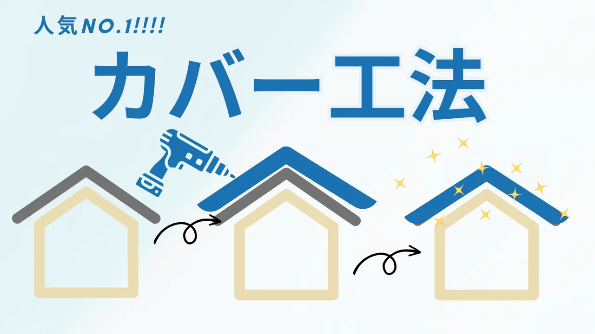
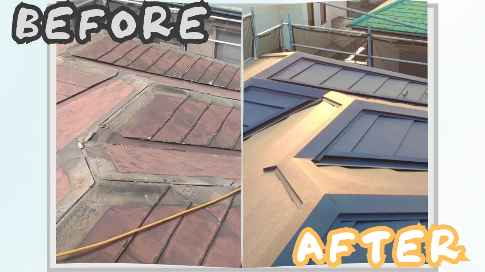

はじめに
屋根のリフォームについて調べると葺き替えや葺き直し、カバー工法など、聞き馴染みのない言葉が出てきて、何がいいのかわからなくなります。
多くのお客様は、相見積を取った際に業者に言われたままの施工方法を選択していますが、知識をつけておいて損はないです。
カバー工法とは既存の屋根の上に、下葺き材を敷いて、その上から新しい屋根材を設置する施工方法のことです。
葺き替えや葺き直しに比べると施工可能条件が多いので注意が必要ですが、他の工法に比べ、比較的安価や屋根の機能性向上などメリットが多いオススメの工法です。
施工可能条件は法的ではなく業者次第になるので、契約を取るためにカバー工法を行う業者もいます。コスト面でだけで工事を依頼しないようにしましょう。

カバー工法のメリット
カバー工法のメリットは既存の屋根を撤去しないことに起因します。
① 既存屋根を撤去する時間がないので、工事期間が短い。
瓦やスレートを外して屋根から下ろすだけでも、時間はかなり掛かります。
業者とはいえ他人が近くにいるのは落ち着かないですし、工事の音は気になります。また、ご近所への配慮もあるので工事期間が短いのは大きなメリットです。
② 既存の屋根に新しい屋根を重ねる為、安心が倍。
屋根が2つあるので、例えどちらかの屋根が破損しても、もう一方の屋根で雨漏りを防ぐことができます。
台風などで物が当たって屋根が破損しても、下の屋根が防いでいる間に修理依頼が出来ます。屋根が破損した際に困るのが着工までの天気が不安になることです。カバー工法をしておけば、落ち着いて相見積を取ることができます。
③ 既存の屋根を撤去・処分するための費用が掛からず安価
屋根のリフォームは安い工事では無いので、コストパフォーマンスは一番大事です。
カバー工法は既存の屋根を撤去しないので、撤去にかかる工賃や処分費用などが掛かりません。コスト面でも機能面でも優れているというのが、カバー工法のメリットです。
カバー工法のデメリット
① 屋根が重くなるので耐震性が落ちる。
一般的に住宅の耐震性は屋根が軽い方が、耐震性が高いです。家の上に思い屋根を乗せてしまうと壁や柱に常にその分負荷がかかっています。さらに重心が高いので地震影響を受けやすく倒壊の危険性があります。
② 施工可能条件があるので、希望しても出来るかわからない。
せっかく調べて希望を伝えてくださると、我々も希望に添いたいのですが、現地調査をすると他の施工方法を提案せざるを得ない場合があり、心苦しいです。
希望通りにならない可能性があるというデメリットが大きいです。
③ それぞれの屋根材の機能を消してしまう場合がある。
カバー工法でよく使われるガルバリウム鋼板は軽量であることがメリットですが、既存屋根がすでにあるので軽くなることはありません。つまり耐震性の改善にはつながりません。既存の屋根材のデザインが気に入っていても、新しい屋根材で隠れてしまう。など、重ねる事によるデメリットがあります。
カバー工法がおすすめの家
① 既存屋根材がスレートorトタン
屋根材がわからない場合は、屋根材の起伏がない方が良いと考えてください。
既存屋根の上に下葺き材を入れるので起伏が激しいと下葺き材が浮き、防水性が保てません。
② 築年数が20年未満
カバー工法は既存の屋根に加えて新しい屋根材の重みが加わるため、住宅の状態によってはオススメできません。築20年未満はあくまで目安ですが、築年数が経ちすぎていない方がカバー工法に向いています。
③ 修理ではなくリフォームをしたい家
カバー工法最大のメリットは「屋根の見栄えを比較的安価に一新する。」です。
新しく見せたい。という需要に対しておすすめなのがカバー工法です。「雨漏りを直したい。」や「屋根を新しくしたい。」は葺き替えの方がおすすめです。

カバー工法ができない家
① 瓦屋根の家
瓦屋根は凹凸が激しくカバー工法を行うことができません。
② 雨漏りしている家
軽度の雨漏りであればカバー工法も可能ですが、雨水によって屋根裏の柱が腐食している恐れがあります。
③ 既にカバー工法をしてある家
カバー工法を既にしている場合は、設置している屋根を撤去しないとカバーできないので、葺き替えと同様になります。
カバー工法オススメ度診断
↓↓結果はコチラ↓↓
あなたが選択したのは0個です！
チェックが0~2個・・・カバー工法できない可能性が高いです。
チェックが3~5個・・・カバー工法が出来る可能性があるので、無料相談をご利用ください。
チェックが6~8個・・・カバー工法が最適の可能性が高いです!!今すぐ無料の現地調査を依頼しましょう!!
※上3つの質問のどれかにチェックが入らなかった場合は、葺き替えや葺き直しをお考え下さい。
さいごに
カバー工法以外に葺き替えや葺き直し、部分補修など屋根の施工方法はたくさんあります。実際に現地調査をした結果、最適な施工方法を提案いたしますので本記事のオススメ度診断はあくまで目安と捉えて頂ければ幸いです。
ここでのオススメ度より実際に現場を見たプロが言う施工方法が一番オススメです。そんな有用な情報を大沼商会は相談・現地調査・御見積まで無料で行っております。お客様に寄り添い、なぜその施工方法が最適なのかご説明致します。屋根工事でお悩みの際は、株式会社 大沼商会にご相談くださいませ。
最後までお読みいただきありがとうございました。